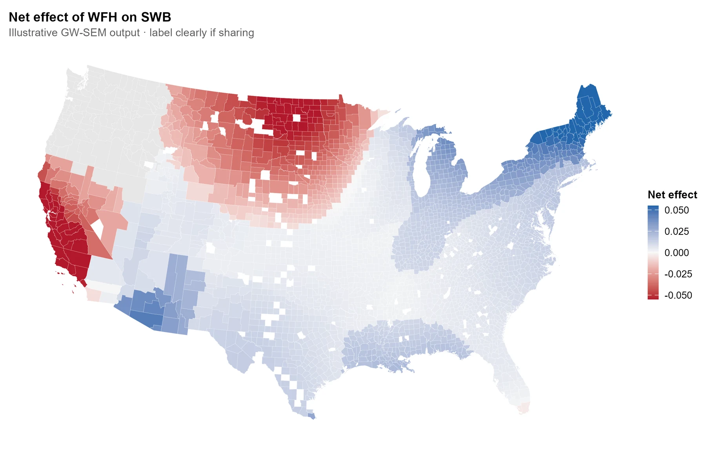

01 / Bryce Canyon
Recreation & land management
Layered trails, lodging, roads, and land administration reveal the landscape around Bryce Canyon National Park.
Multi-layer cartography · Locator inset
Original PDF ↗A geographic perspective
Spatial models and maps for exploring how environments, communities, and well-being connect.

01 / Research methods · R
A spatial pathway workflow that looks beyond a single average to explore where relationships differ—and the mechanisms behind them.
02 / Cartography · ArcGIS Pro
Four cartographic studies of terrain, recreation, population, and land management. Open a map to inspect the full composition.
01 / Bryce Canyon
Layered trails, lodging, roads, and land administration reveal the landscape around Bryce Canyon National Park.
Multi-layer cartography · Locator inset
Original PDF ↗02 / Salt Lake County
Hillshade, trail difficulty, and lift capacity bring the geography of ski recreation into focus.
Terrain visualization · Categorical symbols
Original PDF ↗03 / Salt Lake County
A choropleth places population patterns alongside ski areas and recreation trails.
Choropleth mapping · Demographic data
Original PDF ↗04 / Salt Lake County
Proportional symbols offer a different lens on population size and nearby recreation resources.
Proportional symbols · Spatial composition
Original PDF ↗Connect